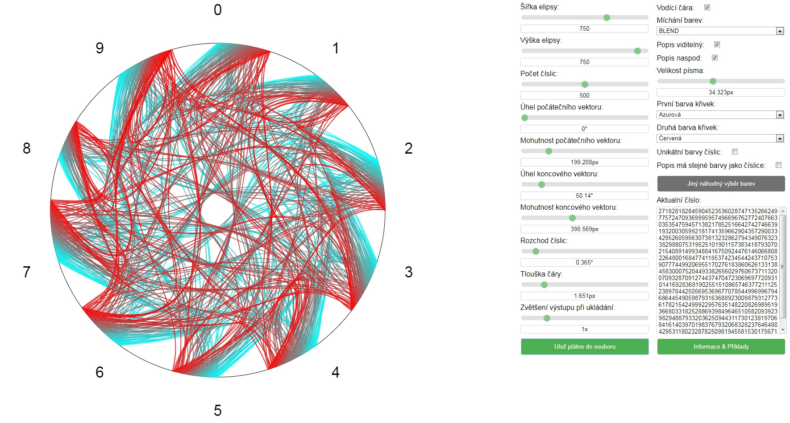
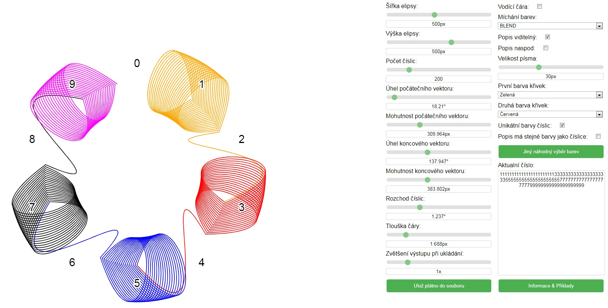
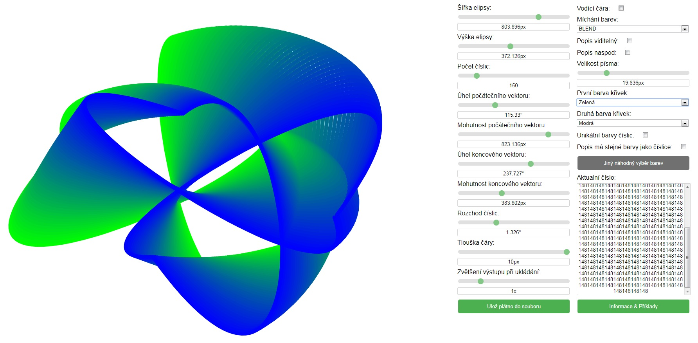

Funkcionalita vizualizéru vychází z elipsy. Každá číslice má vyhrazené své místo na elipse, rovnoměrně
rozprostřené podle úhlu. Poté se začne číst ze vstupu a jednotlivé číslice se spojí pomocí bezierových
křivek.Výsledkem je unikátní obrazec pro jakékoliv číslo, který reprezentuje jeho desetinný rozvoj.
Tento obrazec je následně možné dále upravovat.
- Šířka a výška elipsy
- Počet číslic zobrazených v obrazci
- Beziérova křivka je dána dvěma body (ty jsou zafixovány na elipse), mohutností a úhlem vektoru,
který z nich vychází. Mohutnost i úhel vektoru pro oba body je možné upravit.
- Aby se počáteční a koncové body spojnic číslic nepřekrývali, tak se po zobrazení každé číslice
posune start následující číslice o danný úhel, který můžeme měnit.
- Tloušťka spojnicových čar
- Násobič rozlišení obrázku pro uložení
- Viditelnost vodící čáry a popisu
- Nastavení barev (v základu se barva mění z jedné barvy do druhé podle toho kolik číslic je již
zpracováno(obě barvy je možno nastavit) nebo každé číslici můžeme nastavit unikatní barvu (barvy
jsou náhodné, ale možné je změnit na jinou náhodnou variaci pomocí tlačítka))
- Vstupní číslice
Číslo "e"
Číslo 1.111111111111111113333333333......
Číslo 1.48148148148148148148148148148.....
